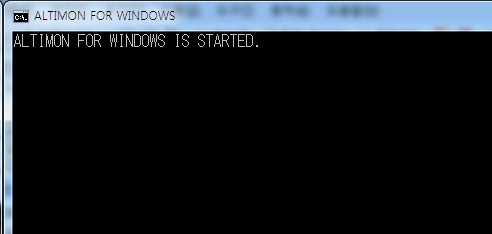

Overview
This document describes a monitoring tool for Windows.
Version
- This document is written based on Altibase HDB version 6.3.1
- Both ALTIBASE HDB 5 and ALTIBASE HDB 6 can be used, but some monitoring items may cause a result error.
- If needed, please leave a request at http://support.altibase.com/en/ or in a comment section on this page.
Monitoring batch program
Download the compressed file below, place it in a folder, and extract it.
Once it is unzipped, the user will find two folders and two files.
- altimon.bat : Batch program for monitoring
- altimon.vbs : VB file to run batch program in background
ALTIMON_SCRIPT folder: There are .sql files containing monitoring queries
ALTIMON_LOG folder: Save log files
Settings
Checking connection information
Change the ALTIBASE HDB server connection command in the altimon.bat file to suit your environment.
set ISQL="%ALTIBASE_HOME%\bin\isql.exe" -s localhost -u sys -p manager -silent
Adding monitoring items
If there are items that the user wants to add other than the basic monitoring items, add a monitoring query to the all.sql file in the ALTIMON_SCRIPT folder.
In the monitoring query, enter the identifier starting with sysdate in the first column of the SELECT clause and _MON_ in the second column.
SELECT TO_CHAR(SYSDATE, 'HH:MI:SS') TIME, '_MON_REP_GAP'
, REP_NAME
, REP_SN
, REP_GAP
FROM V$REPGAP
ORDER BY REP_NAME, REP_GAP;
Monitoring cycle
At the end of altimon.bat, change the number after -n in the command below. This number refers to the monitoring cycle.
Modify to suit the environment in seconds.
ping -n 60 127.0.0.1 > nul
Ex) When set to 5 minutes, -n 60 to -n 300
Deleting old log function
At the bottom of the altimon.bat file are commands that start with forfiles.
In this command, the /D -30 option means to delete the log 30 days ago, so change the number after the /D option.
forfiles /P . /M mon.log* /D -30 /C "cmd /c del @file"
Modifying altimon.vbs file
After downloading the above files, upload them to a folder on the server to be monitored.
Then, modify the path of the second line in the altimon.vbs file to suit your environment.
Set WshShell = CreateObject("WScript.Shell")
WshShell.Run chr(34) & "C:\Users\Altibase\Desktop\altimon.bat" & Chr(34), 0
Set WshShell = Nothing
Execution
How to run in the foreground
Execute Windows Command Prompt (Execution Window). Go to the folder where the altimon.bat file is located and run the batch program.
C:\Users\Altibase>start altimon.bat or C:\Users\Altibase>start altimon
The user can also go to the folder where the batch program (altimon.bat) is located in Windows Explorer and double-click the alti_mon.bat file.
If executing the batch program in the foreground, a notification message appears in the execution window as shown below.

How to execute in background
Put the attached files in the same folder, open a DOS window, move to the folder, and execute the command below.
C> alti_mon.vbs
C:\Users\Altibase\Desktop>alti_mon.vbs Microsoft (R) Windows Script Host version 5.8 Copyright (C) Microsoft Corporation 1996-2001. All rights reserved.
Termination
When executing in the foreground
Close the execution window where you executed the batch program (altimon.bat) or press Ctrl+c.
When executing in the background
Execute the Windows command prompt (execution window) and execute the command below.
C> taskkill /fi "windowtitle eq ALTIMON FOR WINDOWS"
C:\Users\Altibase\Desktop>taskkill /fi "windowtitle eq ALTIMON FOR WINDOWS" Success: A shutdown signal was sent to the process (PID 8216).
Log
When executing the batch program, a log file in the form of mon.log.YYYY-MM-DD is created under the ALTIMON_LOG folder.
{kind=link}